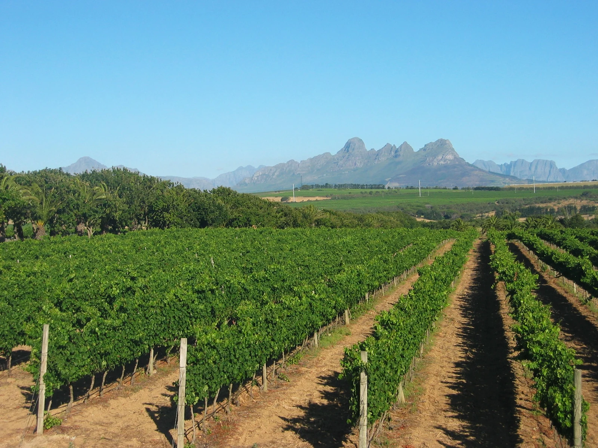

Nature intelligence.
Business clarity.
Understand how your business depends on nature, how it affects nature, and which risks and opportunities deserve attention. EagleNatureInsight turns the evidence into clear explanations and practical next steps.
The bigger picture, around your business
Choose your business activity and the places that matter to it. Draw a site boundary or upload your area, explore the satellite view, and bring environmental data together with your own records and field observations.
The assessment explains what each available indicator measures, what its value suggests for your business, and what to check or do next. Water, vegetation, land cover, climate hazards and biodiversity context become a usable starting point for decisions.
A practical route through TNFD’s LEAP
The Taskforce on Nature-related Financial Disclosures (TNFD) provides the LEAP approach for identifying and assessing nature-related issues. EagleNatureInsight makes each step easier to work through.
- L
Locate your interface with nature
Map your sites and their surrounding landscape. See where operations meet water systems, ecosystems and areas of biodiversity importance.
Your starting point: a site map and environmental context. - E
Evaluate dependencies and impacts
Connect your business activities with the natural systems they use and influence. Add your own water, land-use and operational evidence to make that connection more specific.
Your starting point: indicators, explanations and evidence gaps. - A
Assess risks and opportunities
Review what the measured conditions could mean for production, costs and continuity. Prioritise the issues that need a closer check or a management response.
Your starting point: business-relevant flags and suggested actions. - P
Prepare to respond and report
Turn findings into an action plan. Download a PDF with your assessment’s results, maps, interpretations and recommended next steps to discuss with your team and partners.
Your starting point: a clear plan and a shareable report.


Know what matters.
Know what to do.
For example, a change in vegetation greenness can help a grower decide where to inspect crop condition. Comparing that signal with rainfall, irrigation records and field photographs helps identify the next useful check.
The same approach applies across sectors: connect the evidence with the operation, explain the uncertainty, and identify a practical response.
Stronger evidence, stronger decisions
Ground-truth what you see
Add field photographs and observations to compare the satellite view with conditions on the ground.
Understand confidence
See the data’s date, coverage, scale and gaps so you can judge how much weight to give each finding.
Keep the assessment useful
Focus on the indicators and actions that relate to your business activities and the area assessed.
For small businesses. Across sectors.
The platform supports businesses exploring their own sites, partners working with suppliers, and programmes helping SMEs build their nature knowledge. Specialist pilot workspaces retain the context and reporting developed with each business.
We are continuing to develop EagleNatureInsight through research and pilots. New datasets and insights are added as their coverage, access and relevance are established.